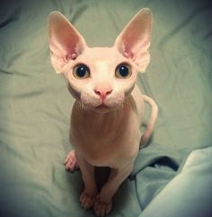

| 
|
Bills, un gato gruñoñ y cuidador, perfecto para gente mayor ya que a pesar de
su apariencia infantil, se lleva mucho mejor con la gente mas adulta y pacifica, le gusta
acompañar a caminatas y tambien dar siestas de tarde, rescatado de la comuna de Cerrillos este
gatito puede ser tu perfecta compañia
|